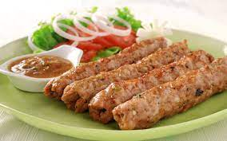

Seekh Kabab
Ingredients:
- 500g minced meat (lamb, beef, or chicken)
- 1 onion, finely chopped
- 2-3 green chilies, finely chopped (adjust to your spice preference)
- 2 tablespoons ginger-garlic paste
- 1/2 cup fresh coriander leaves, finely chopped
- 1/2 cup fresh mint leaves, finely chopped
- 1 tablespoon garam masala
- 1 teaspoon cumin powder
- 1 teaspoon coriander powder
- Salt to taste
- 2-3 tablespoons vegetable oil
- Skewers (wooden or metal)
Instructions:
1. In a large mixing bowl, combine the minced meat, chopped onion, green chilies, ginger-garlic paste,fresh coriander leaves, fresh mint leaves, garam masala, cumin powder, coriander powder, and salt.
2. Mix the ingredients thoroughly, ensuring the spices are evenly distributed in the meat mixture.
3. Soak wooden skewers in water for about 30 minutes to prevent them from burning during grilling.
4. Take a small portion of the meat mixture and mold it onto a skewer, pressing and shaping it into a long, cylindrical shape. Repeat with the remaining meat mixture.
5. Preheat a grill or barbecue to medium-high heat. If using wooden skewers, make sure to brush them with oil to prevent sticking.
6. Grill the seekh kebabs for about 8-10 minutes, turning occasionally, until they are browned and cooked through. You can also cook them on a stovetop grill or in the oven.
7. Serve the hot and delicious Seekh Kebabs with your favorite chutney or sauce.
Seekh Kebabs are a popular Indian appetizer, known for their flavorful and spicy taste. Enjoy!